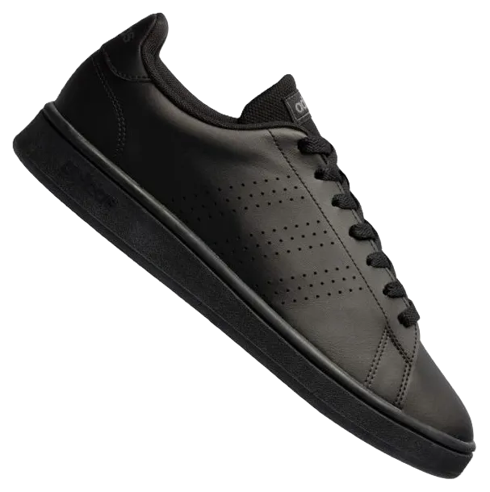
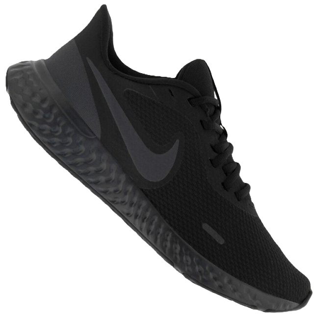
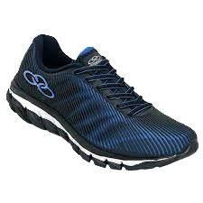
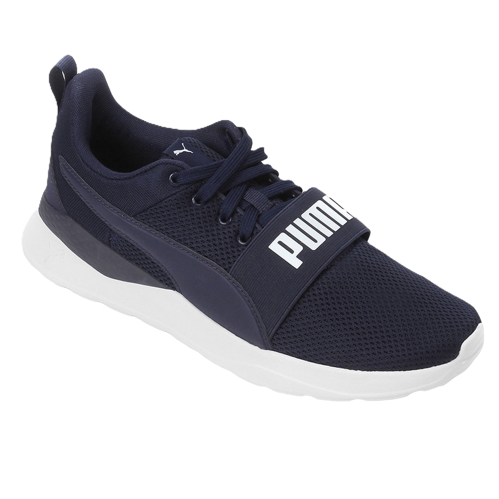

Sessão Masculina
Aqui você encontra detalhes de todos os produtos da sessão masculina.
Adidas Advanced
Com um design moderno e minimalista, o Adidas Advanced é perfeito para quem busca estilo e conforto no dia a dia. Sua estrutura leve e respirável oferece maior ventilação, enquanto a sola resistente garante excelente aderência e durabilidade. Ideal para momentos casuais e urbanos.
Adidas Grand Court

Inspirado nos clássicos do tênis, o Adidas Grand Court combina a elegância retrô com o conforto contemporâneo. Seu cabedal de couro sintético proporciona durabilidade e um visual sofisticado, enquanto a palmilha macia oferece conforto para o uso prolongado.
Adidas Superstar

Um verdadeiro ícone da moda urbana, o Adidas Superstar é sinônimo de estilo atemporal. Com sua biqueira emborrachada em forma de concha e linhas clássicas, este tênis oferece conforto, durabilidade e um visual que combina com qualquer look.
Nike BQ3207
Para quem busca performance e estilo, o Nike BQ3207 é a escolha certa. Com materiais leves e respiráveis, ele garante conforto durante todo o dia. Sua sola com ótima tração é ideal para atividades físicas e momentos casuais.
Nike Court Legacy

O Nike Court Legacy traz o estilo clássico do tênis com um toque contemporâneo. Com materiais premium e acabamento impecável, ele é perfeito para quem valoriza conforto e versatilidade no dia a dia, mantendo o visual elegante e despojado.
Nike Primo Court

Com um design simples e funcional, o Nike Primo Court é ideal para quem procura um tênis discreto e confortável. Sua sola flexível e cabedal resistente fazem deste modelo uma escolha confiável para diversas ocasiões.
Nike Revolution 5

Feito para quem busca conforto e desempenho, o Nike Revolution 5 oferece amortecimento responsivo e um design minimalista. Seu cabedal em malha respirável mantém os pés frescos, enquanto a entressola em espuma proporciona passos leves e macios.
Olimpykus Dynamic

Estilo e conforto para todas as ocasiões. O Olympikus Dynamic conta com um cabedal em tecido que se ajusta aos pés, proporcionando respirabilidade e flexibilidade. Sua sola de borracha antiderrapante garante segurança em cada passo.
Olympikus Perfect
Perfeito para quem não abre mão de qualidade e conforto, o Olympikus Perfect apresenta um design moderno e funcional. Seu solado com tecnologia exclusiva oferece amortecimento e estabilidade, ideal para treinos ou o uso diário.
Olympikus Soma Evasense

Com a tecnologia Evasense, o Olympikus Soma proporciona uma experiência única de conforto e leveza. Seu cabedal em tecido oferece respirabilidade, enquanto o solado flexível garante passos seguros e confortáveis, seja para atividades físicas ou momentos casuais.
Puma Anzarun Lite
O Puma Anzarun Lite combina design esportivo com conforto de alta performance. Sua construção leve e respirável, aliada a um amortecimento eficiente, faz deste tênis a escolha ideal para treinos e atividades do dia a dia com estilo e praticidade.
Puma Viz Runner

O Puma Viz Runner é perfeito para quem procura estilo atlético e durabilidade. Seu cabedal resistente e sua estrutura reforçada oferecem suporte extra, enquanto o design moderno garante um visual marcante e esportivo para treinos ou passeios.